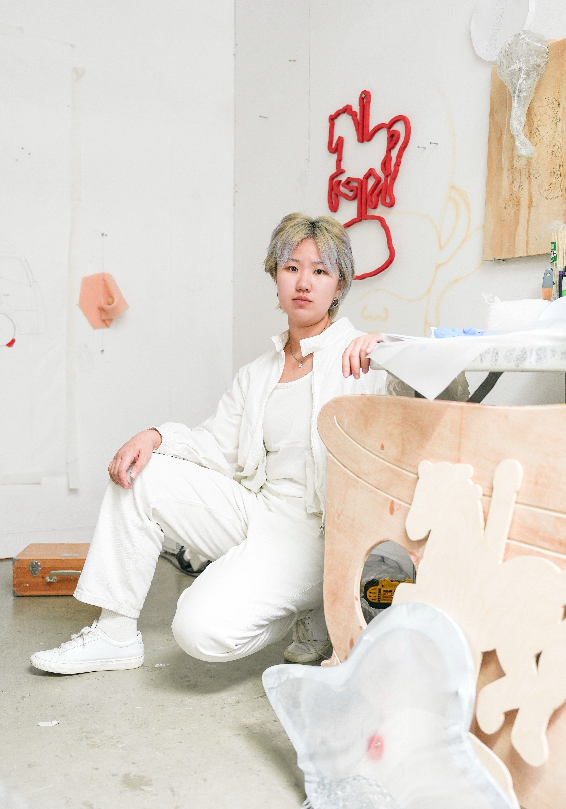

b. 2000, Shanghai.
based in Oxford / Shanghai.
MFA, The Ruskin School of Art, University of Oxford, 2026
BFA, School of the Art Institute of Chicago, 2023

based in Oxford / Shanghai.
MFA, The Ruskin School of Art, University of Oxford, 2026
BFA, School of the Art Institute of Chicago, 2023
Inspired by Michel Foucault’s The Order of Things, I approach knowledge as a historically contingent system of discourse that produces regimes of truth. Departing from how power structures defined ‘truth’ in the past, my research investigates how the qualities that differentiate humans from machines are shaping the foundation for future knowledge production.
Where classification, prediction, and automation promise transparency and control as epistemic tools, I use sculpture and performance to test the opposite: how the order that coexist with opacity and inaccessibility produce authenticity, circulation, trust, and epistemic legitimacy in knowledge production. Performance scores, bodily protocols, discursive text, rhizomatic diagrams, and provisional materials are grounding tools. A knowable thing is categorizable and controllable, so I focus on the potentiality of the unknowable and unsettled in late capitalism and technological contexts. My work creates situations through experimentation.
I begin my research by identifying paradoxical subjects: a phenomenon, an established order, a materialized invention. By charting, I examine the subject’s historical layers and scientific conditions that allowed its paradoxical quality, and the hidden and excluded conditions in decision-making that may lead it to certainty. In making, I modify and recompose these elements to shift the narrative center to human vulnerability, ephemerality, and creativity—qualities that resist conventional archive and strain against machinic logics of capture.
CV
EDUCATION
2026 MFA, The Ruskin School of Art, University of Oxford, Oxford, UK
2023 BFA, Sculpture & Performance, School of the Art Institute of Chicago, Chicago, IL, US
REWARDS
2024 World Less Traveled Awards, School of the Art Institute of Chicago, Chicago, IL, US
SOLO/DUO SOLO EXHIBITION
2025 The Game Archive, SOOFA SUHE, Suhe Haus, Shanghai, China
SELECTED EXHIBITIONS
2026 Epigram in E, Gallery 46, London, UK
2026 love beams bricks dreams, New College, University of Oxford, Oxford, UK
2025 FOMO, Bleur Studio, London, UK
2025 Before Stepping into Tomorrow, M50-None Project Gallery, Shanghai, China
2025 GNOSTIC INDUCTION COUPLING INTEROSMOSIS, ACID, Shenzhen, China
2024 Ambition!, West Bund Art Center (Hall N), Shanghai, China
2024 mute BODY, Alte Handelsschule, Leipzig, Germany
2024 windy HOME, Tour de Franz, Leipzig, Germany
2023 Fall Undergraduate Exhibition 2023, School of the Art Institute of Chicago Gallery, Chicago, IL, US
PUBLIC ART
2023 Analog, Art on The Mart, The Merchandise Mart, Chicago, IL, US
PERFORMANCE
2024 ‘Approaches to be an Experience Thief’, Third Room, Leipzig, Germany
2023 Impact Performance Festival 2023, School of the Art Institute of Chicago Gallery, Chicago, IL, US
2023 Cho-Cho-Cho-Choo Station, Comfort Station, Chicago, IL, US
2023 Orange Ladder, No Nation Art Gallery, Chicago, IL, US
2023 READINGS, Watershed Art and Ecology, Chicago, IL, US
2022 White Box-LOVE, ‘A Place We Long For’, The Research House for Asian Art(RHAA), Chicago, IL, US
RESIDENCY & FELLOWSHIP
2024 PILOTENKUECHE International Art Program, Leipzig, Germany
REVIEWS & PUBLICATIONS
2025 Mingyuan Museum, CYE × J Jiang: Reality Reconstruction of the Wanderer
2025 Yunyao Que, SOOFA SUHE, Spinning the Earth Like a Rubik's Cube
2024 Avena, Kintija, ‘J Jiang: Expanding into material’, PILOTENKUECHE International Art Program Press
CONTACT
nyjiang.j@gmail.com
© 2023 J Jiang